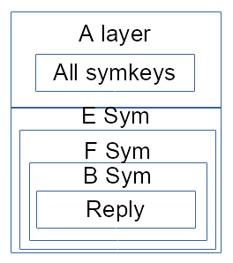

POSTS
Implementing MyDHT tunnel
Last post, we gave some thoughts on tunnel and mydht interaction,concluding that a mydht specific implementation specific for tunnel should be build (and in a second time maybe use it in a transport).
That was done for a single mode of ‘Full’ tunnel : the mode that does not require caching. Cache usage mode and error reporting implementation are still incomplete but shall follow similar steps.
This post will describe some of the change upon tunnel and mydht, mainly needed to run within multithreaded environment with non blocking transport stream.
The new crate is called mydht-tunnel.
tunneling use case
We use a variable length tunnel (‘Full’ tunnel) in a mode that does not require any caching.
Alice sends a query to Bob over n peer (on schema 2 peers), each peer find reference (address) to next peer after reading frame header (asymetric ciphering), then each peer proxy content (symetric ciphering) to next peer. Last peer (Bob) can read the query and will reply using a payload that was inserted by Alice. Depending on config, the payload will route in the same route as for sending or in a different route (choosed by Alice).
So all is decided by Alice, other peers will only decipher the frame and proxy it (or reply to it for Bob). So most of the cost is for Alice peers and dest have to deciphered one layer on query and decipher header plus cipher on layer on reply, Alice have to multi ciphered all peers query, multi ciphered all peers reply headers and on reply multi decipher reply content.
Basically the frame sent by Alice for two hop with reply tunnel will look like that :
Each ciphered layer contains an asymetrically ciphered header (with a symetric key for the content and the next peer address) and symetrically ciphered content.
The content read is the payload to transmit to next peer or the query plus the reply payload for dest (Bob).
The reply on the schema is obviously not the reply (written by alice, not bob), but the header to use for replying to alice, what we will call the reply payload :
In this payload, each layer contains next peer address (reply route) and a symetric key, for Bob those two infos are in its query header. The last peer (Alice) will not receive a single key for proxying the content but allkeys needed to read the reply.
The route choice is made by Alice (same as for query), this implies that to build it our ‘Full’ tunnel implementation contains another ‘Full’ tunnel implementation (a variant without reply), leading to an iteresting type as seen in this debug trace (to big to be easily readable).
Bob replies by sending the reply payload containing all symetric keys, plus its actual reply encoded with its own reply symetric key.
Each proxy hop will read (similar as query) its header and will proxy the included content of payload, then proxy the symetrically enciphered reply content from previous peer by symetrically ciphering it (sym key provided in header). Note that at least two limiter are in use here for first part and second part (a bit more in fact).
At the end alice will receive :

Finally Alice read her header to get back all the reply keys (that she originally generate while building query frame), and with those n+1 key can access Bob reply.
We see that alice could have store those keys instead of sending them back to herself; in a same way proxying peer (case with same reply route only) could have store symmetric reply key when proxying the query : that is the scheme with caching (no need for the big reply payload), the other mode for ‘Full’ that is not yet include in mydht-tunnel (but already in tunnel).
In fact the frame is a bit more complex and ‘limiters’ readers and writers are used to mark the end of frames (it is or will be documented in tunnel crate).
implementation
inner service
Tunneling is fine, with custom code both in local and global service of this MyDHT instance. Still we probably want to run a service. Their is two possibility :
- service running from another mydht instance : another mydht is running on another listening address (possibly on another transport), but the same peers are used (with an adapter to switch address). The mydht instance will be use from this other instance to send content. The non tunnel mydht instance will be use to manage peers and should send its update to the other instance tunnel services (tunnel are build from connected peers). It will also be use to run the service specific code.
- service is include into tunnel service : probably the best solution if we do not want to run two transports, simply put the service to run into GlobalTunnel service and into LocalTunnel service.
So MyDHTTunnel contains an inner service that can run on both local and global tunnel specific services :
pub trait MyDHTTunnelConf : 'static + Send + Sized {
...
type InnerCommand : ApiQueriable + PeerStatusListener<Self::PeerRef>
+ Clone
+ Send;
type InnerReply : ApiQueriable
+ Send;
type InnerServiceProto : Clone + Send;
type InnerService : Service<
CommandIn = GlobalCommand<Self::PeerRef,Self::InnerCommand>,
CommandOut = GlobalTunnelReply<Self>,
>
...
Note that currently the same service is used for local and global, it could become usefull to have two separate service in the future (in standard mydht it is).
pub struct LocalTunnelService<MC : MyDHTTunnelConf> {
...
pub inner : MC::InnerService,
and
pub struct GlobalTunnelService<MC : MyDHTTunnelConf> {
pub inner : MC::InnerService,
Tunnel access
Tunnel ‘Full’ implementation struct (with inner cache) is located in global service of MyDHT, but with this use case (no routing information in cache) we do not want to use the global service for every proxy or reply (theorically only required for sending query).
For this purpose we change tunnel Api to create a clonable tunnel partial implementation which could be send to our Read service.
This lightweight implementation of tunnel uses the same prototypes but with optional result (and in some specific case less parameters).
So we create/add this lightweight clonable tunnel in our Read service and when receiving a tunnel frame, if the methods to get proxy writer (or reply writer for bob) returns a value, we send directly a message to the sender (through mainloop), if no result return from this lightweight tunnel, we send a message to global service where we run the method on the main tunnel object (with cache) and then resulting message is send to the writer (through mainloop again).
So a new method (and associated type) is added to TunnelNoRep to instantiate the clonable lightweight tunnel :
fn new_tunnel_read_prov (&self) -> Self::ReadProv {
The lightweight tunnel is define in two traits (with and without reply) :
pub trait TunnelNoRepReadProv<T : TunnelNoRep> {
fn new_tunnel_read_prov (&self) -> Self;
fn new_reader (&mut self) -> <T as TunnelNoRep>::TR;
fn can_dest_reader (&mut self, &<T as TunnelNoRep>::TR) -> bool;
fn new_dest_reader<R : Read> (&mut self, <T as TunnelNoRep>::TR, &mut R) -> Result<Option<<T as TunnelNoRep>::DR>>;
fn can_proxy_writer (&mut self, &<T as TunnelNoRep>::TR) -> bool;
fn new_proxy_writer (&mut self, <T as TunnelNoRep>::TR) -> Result<Option<(<T as TunnelNoRep>::PW, <<T as TunnelNoRep>::P as Peer>::Address)>>;
}
and
pub trait TunnelReadProv<T : Tunnel> : TunnelNoRepReadProv<T> where
<T as TunnelNoRep>::TR : TunnelReader<RI=T::RI>,
<T as TunnelNoRep>::ReadProv : TunnelReadProv<T>,
{
fn reply_writer_init_init (&mut self) -> Result<Option<T::RW_INIT>>;
fn new_reply_writer<R : Read> (&mut self, &mut T::DR, &mut R) -> Result<(bool,bool,Option<(T::RW, <T::P as Peer>::Address)>)>;
}
Some additional functions like ‘can_proxy_writer’ are here to avoid consuming the read stream (otherwhise runing the operation again in global service will fail). Same thing must be taken care of when implementing function like ‘new_reply_writer’ : if content is read from stream a state must be store in the ExtReader if returning None.
Special msgenc
Having this new tunnel object for our Read service is fine, but it need to read from stream. That is not possible in local service : local service only have a message as input. The produced tunnel writers also need to be use from WriteService, but their is no call to local service in write service.
Local service does not seem suitable for tunnel read and write operations.
Global service will need to read (see next part on borrowed stream), but it is fine.
The way it is done here is to use the MsgEnc trait to do those operation. MsgEnc is used in both Read and Write service and have access to their stream.
A special MsgEnc implementation is used (contains an actual MsgEnc for inner service content and the lightweight clonable tunnel) :
pub struct TunnelWriterReader<MC : MyDHTTunnelConf> {
pub inner_enc : MC::MsgEnc,
...
pub t_readprov : FullReadProv<TunnelTraits<MC>>,
}
On decoding (read service) it will read header of frame then inner content with its inner encoder if the peer is dest(Bob or Alice on reply). On encoding (write service) it will either run proxy operation or reply with inner reply to encode.
Borrowing read stream
Among the tunnel operations, two are really interesting : the proxy that forward its inner content and the dest (bob) replying by forwarding the reply payload.
The point is that in both case we read from a bytestream and forward it.
Reading header in memory is fine (next peer address, symetric key…), putting the reply payload or content in memory is not. By putting the payload to proxy in memory all become totally unscallable (message can be pretty huge with long tunnel plus query and reply can contains any size of content). With our current design we shall need to store the content to proxy in a file (in memory is not an option) from read service then read this file from write service to proxy its content : totally uncall for.
The only way to proxy those variable length random (ciphered) bytes is by having both streams (and associated reader and writer) in the same process (only a byte buffer needed in memory).
All tunnel crate code is based upon this bufferized approach (by composing ‘readwrite_comp’ crates ExtWrite and ExtRead implementation).
pub trait ExtRead {
/// read header (to initiate internal state) if needed
fn read_header<R : Read>(&mut self, &mut R) -> Result<()>;
/// read in buffer.
fn read_from<R : Read>(&mut self, &mut R, &mut[u8]) -> Result<usize>;
/// read exact
fn read_exact_from<R : Read>(&mut self, r : &mut R, mut buf: &mut[u8]) -> Result<()> {
...
}
/// read up to first no content read and apply read_end
fn read_to_end<R : Read>(&mut self, r : &mut R, buf : &mut[u8]) -> Result<()> {
...
}
/// read end bytes (and possibly update internal state).
/// To use in a pure read write context, this is call on CompR Drop and should generally not need to be called manually.
/// When the outer element of composition is removed drop finalize its action.
fn read_end<R : Read>(&mut self, &mut R) -> Result<()>;
...
}
...
pub trait ExtWrite {
/// write header if needed
fn write_header<W : Write>(&mut self, &mut W) -> Result<()>;
/// write buffer.
fn write_into<W : Write>(&mut self, &mut W, &[u8]) -> Result<usize>;
/// write all
fn write_all_into<W : Write>(&mut self, w : &mut W, mut buf : &[u8]) -> Result<()> {
...
}
/// Could add end content (padding...) only if read can manage it
/// does not flush recursivly
#[inline]
fn flush_into<W : Write>(&mut self, _ : &mut W) -> Result<()> {Ok(())}
/// write content at the end of stream. Read will be able to read it with a call to read_end.
/// To use in a pure read write context, this is call on CompW Drop and should generally not need to be called manually.
/// When the outer element of composition is removed drop finalize its action.
fn write_end<W : Write>(&mut self, &mut W) -> Result<()>;
}
Also interesting is MultiExt to keep implementation efficient (and avoid the defect of too much composition) when composing over multiple ExtRead or ExtWrite :
/// Multiple layered read (similar to MCompW).
pub type MultiR<'a, 'b, R, ER> = CompR<'a,'b,R,MultiRExt<ER>>;
pub struct MultiRExt<ER : ExtRead>(Vec<ER>, Vec<CompRState>);
So with mydht running read and write in different service the only way to use correctly tunnel is to move the readstream (tcp socket in our test) into the forward write service (another peer tcp socket in our test). We could also choose to move the write stream into the read stream but it is wrong as write stream to use is define by reading read stream and selected by address in mainloop.
So if we borrow readstream proxy is easy and we can use some simple proxy like in our tunnel crate test cases :
let mut readbuf = vec![0;MC::PROXY_BUF_SIZE];
let mut y2 = y.opt_clone().unwrap();
let mut ry = ReadYield(rs,y);
let mut reader = CompExtRInner(&mut ry,rshad);
proxy.read_header(&mut reader)?;
let mut wy = WriteYield(w,&mut y2);
let mut w = CompExtWInner(&mut wy,wshad);
proxy.write_header(&mut w)?;
// unknown length
let mut ix;
while {
let l = proxy.read_from(&mut reader, &mut readbuf)?;
ix = 0;
while ix < l {
let nb = proxy.write_into(&mut w, &mut readbuf[..l])?;
ix += nb;
}
l > 0
} {}
proxy.read_end(&mut reader)?;
proxy.write_end(&mut w)?;
proxy.flush_into(&mut w)?;
Note that we could use ‘write_all_into’ for shorter/cleanest code (written this way for debugging purpose).
readstream in message
ReadStream and WriteStream are already ‘Send’ (they were put in mpsc messages in my previous mydht design).
So we borrow the readstream by putting it in the message for the write service.
let is_bor = mess.is_borrow_read();
...
if is_bor {
// put read in msg plus slab ix
let shad = replace(&mut self.shad_msg,None).unwrap();
let stream = replace(&mut self.stream,None).unwrap();
mess.put_read(stream,shad,self.token,&mut self.enc);
}
Not only the read stream is borrowed, but also the shadow use for reading (MyDHT allows definition of Shadow/Ciphering between peers). We also pass a reference to MsgEnc allowing us to transmit some internal state object (the current dest reader in some config)
This is done into read service by using a specific trait on message :
pub trait ReaderBorrowable<MC : MyDHTConf> {
#[inline]
fn is_borrow_read(&self) -> bool { false }
#[inline]
fn is_borrow_read_end(&self) -> bool { true }
#[inline]
fn put_read(&mut self, _read : <MC::Transport as Transport>::ReadStream, _shad : <MC::Peer as Peer>::ShadowRMsg, _token : usize, &mut MC::MsgEnc) {
}
}
The trait must be implemented by local service command.
After its read stream borrow, the read service is in a borrow state (we also should send a end message to mainloop) that is stale until it get its stream back (input channel message buffer size limit is require here).
Sending Peer to tunnel cache
Connected peers stored in global service need to be synchronized with mainloop connected peer cache. This is achieved by the new trait ‘PeerStatusListener’.
impl<MC : MyDHTTunnelConf> PeerStatusListener<MC::PeerRef> for GlobalTunnelCommand<MC> {
const DO_LISTEN : bool = true;
fn build_command(command : PeerStatusCommand<MC::PeerRef>) -> Self {
match command {
PeerStatusCommand::PeerOnline(rp,_) => GlobalTunnelCommand::NewOnline(rp),
PeerStatusCommand::PeerOffline(rp,_) => GlobalTunnelCommand::Offline(rp),
}
}
}
The global service command if implementing this trait will receive new peers on connection (hardcoded in MyDHT mainloop), that is the purpose of the above implementation.
This seems a little hacky, and may change (if not usefull for other GlobalService usecases).
handling asynch
At this point all looks fine : tunnel operation in MsgEnc, a inner service, a inner msgenc, even borrowing read.
Yet our test case only ran fine up to 8 peers tunnels (6 proxy only). The problem was that I did forgot that borrowed read stream is a non blocking transport implementation (non blocking tcp socket) and which with medium size message (8 peers) is prone to return a ‘WouldBlock’ error. In previous blog we have seen that non blocking transports are managed by using ReadYield and WriteYield composer to suspend service on such errors. Problem, those composers use an ‘&mut asyncYield’ to suspend that cannot be use in foth reader and writer composer at the same time.
Needing to access ‘&mut asynch_yield’ from two stream at the same time is bad. As a pragmatic way of doing it an ‘opt_clone’ method was added to ‘SpawnerYield’ trait (optional clone).
First attempt: passing yield in message : not easy, main issue is that ‘Service’ trait is not associated to ‘SpawnYield’ (parameter type of ‘Service’ inner ‘call’ method) and me would need to define it as a trait object in the message (Read service do not know about the type of this SpawnYield even if we know it will be call with the one define in MyDHTConf).
Second more successful idea, passing yield in ‘MsgEnc’, as seen before ‘MsgEnc’ is used for new means (not exclusively encoding) and passing yield as parameter makes the interface even more MyDHT specific (and less encoding specific), yet it let us use our ‘SpawnerYield’ as needed.
Next we need to choose : - make ‘spawneryield’ cloneable. Currently there is ‘&‘a mut Coroutine’ implementation that does not allow it. - remove opt_clone and use yield only in Write or Read at the same time: doable in most code except ‘reply_writer_init’ function where forwarding the reply payload is inner to ‘Full’ tunnel trait implementation : we could change this interface and simply add the possibility to ask for copying bytes up to the end of proxy (will be done manually like when proxying). This could be part of a good redesign of tunnel to use a generic state machine for encoding/decoding (currently having trait function called at specific points shows its limitations).
A better design
Another possibility would have been to run proxy and reply (the copy of the reply payload) directly from the Tunnel Local service. Meaning that read stream is still borrowed in message (but only to be use in local service) and that write stream is send from mainloop to local service (through read service) instead of spawning a write service.
What is the gain ? We avoid spawning a Write service in those two cases.
What does it involves ?
- mainloop on connect will send its write stream to read (very specific)
- special msgenc could be simplier as async_yield reference usage will be deported to local service
- yielding on those operation from local service involves specific mainloop code (either send a message to read service that will yield local service or directly yield local service if its spawner allows it (probably not our use case)).
All in all, having already implement the other design, this design being a bit more impactant for mydht base code, I choose not to follow it yet.
To lower write service spawn impact, a thread pool service spawner should be use. Thinking back, the idea to run proxy in local service add the overhead of unyielding through sending a message to read service.
service configuring
To sumup (and maybe make this text more intelligible) service usage : - write service : probably better in its own thread (cpu pool usage is nice as we ‘SendOnce’), can still run in a coroutine service if using a non blocking transport. - global service : depends on its innerservice, out of the inner service it is mostly a cache (no reading or writing operation was a implementation choice (required some change on tunnel api on some future change for other tunnel mode)) and could run on the mainloop thread. - read service : only reading operation (not as heavy as write), so depends on inner service in localservice : if innerservice is costy we should probably put read in its own thread. For brocking transport it must run in its own thread anyway. - Local service (spawn from read service) : because read service is running mostly once, their is no reason to spawn local service in its own thread (it is read service that should run in its own thread). With the alternative design we could still choose to run read service in the same thread as mainloop and to put local service in a new thread : that way unyielding from mainloop could directly address the readservice (with a clonable spawn unyield that need to be transmit to mainloop) making it potentially a bit better (if reading message is small and yielding requring : seems contradictory but it could not be depending on transport).
Reconsidering, the message passing on Unyield for this ‘better design’ is really bad, due to the way unyield was define : a costless function that could be call on wrong service state numerous time (and when debugging it is) without big impact. So this better design involves also the compromise of local read service and threaded local service or to change local service to be a function call instead of a service spawned from read service (could be ok in a way).
Transport Connection Issue
Connection management does not fit the initial MyDHT use case.
First idea was to use standard mydht connection, one sending and one receiving with each connected peers. But sending content to peer depends only on a random routing choice and we may route a lot through a single peer (communication with many peers but with same first peer for tunnels). The way proxying or sending is done we need to send all content before switching to another message, and some contents may be send for minutes or more (full streamed messaging with possible file attachments). So when proxying content to a peer for whom we already proxy another content, we are totally blocking it : that is bad.
The easiest way to circumvent this issue is simply to use a new transport stream for each proxy message : A new ‘SendOnce’ mode is used for those single use connection. That is really bad as observing connection and deconnection in the network will directly reveals the routes used (with a global network observation). So next step should be to reuse connection by managing an open connection pool, this is not as easy (problematic of choosing between waiting for connection to be available or opening a new connection, and when to release a connection). Another idea is to multiplex at transport level (transport keeping connection openned), that may be simplier but a bit to specific.
The single message per connection choice is also a lot easier for implementation, as a miss of write_end or read_end from ExtRead or ExtWrite is less impacting.
Even if our current use case and tests are done with NoAuth mode, with standard mydht auth mode the single use of connection becomes a significant overhead.
Frame size issue
With this tunnel scheme we got a good idea of the place of the peer in the tunnel by looking at frames size : on query it gets shorter for each proxying and on reply it gets fatter for each proxying. This is an issue that shall be fixed at tunnel level (in tunnel crate), some random filler may be added to the tunnel protocol (if not already the case).
Conclusion
Use of tunnel has been only plugged for Full tunnel with reply in frame without error handling (I want to use it in a POC voting protocol). Our test case ‘test_ping_pong_mult_hop’ can be use for variable length tunnel (test with more than a hundred hops is fine but test case is currently plugged on 25).
This test case was very usefull, and an initial issue was to forget about ‘ReadYield’ requirement for the borrowed stream. That leads to a fun debugging session, with this test case on localhost running only up to a 8 peer tunnel (6 proxy peer only) and hangging silently otherwhise. Also usage of the ‘SpawnerYield’ like described before was not as smooth as I thought it will be (some api changes looks bad).
Some major issue makes the implementation highly insecure (connection management need to be uncoupled from single message transmission).
For other ‘Full’ tunnel modes (global service cache containing info for routing), the implementation looks doable (some of the service message routing to global service cache is already in place (initialy reply was send to global service before realizing it was useless)).
Yet we will have a first issue : the reply dest is currently cached in tunnel by reading its address from its reader (stream), with MyDHT transport trait it is not an option because we cannot say that we will reply to the address use by the connected stream (port in tcp socket differs from listening one).
Two possibilities here :
- put each peer reply address in the tunnel frame, next to the error id or the previous peer cache id (second one seems better because it could be added by ecah proxy peer)
- change mydht trait to give access to the listening address from the read stream : bad that is the purpose of the MyDHT authentication (update of peer info). So simply use this scheme only with a MyDHT authentication and put the connected peer reference in the message sent to global service.